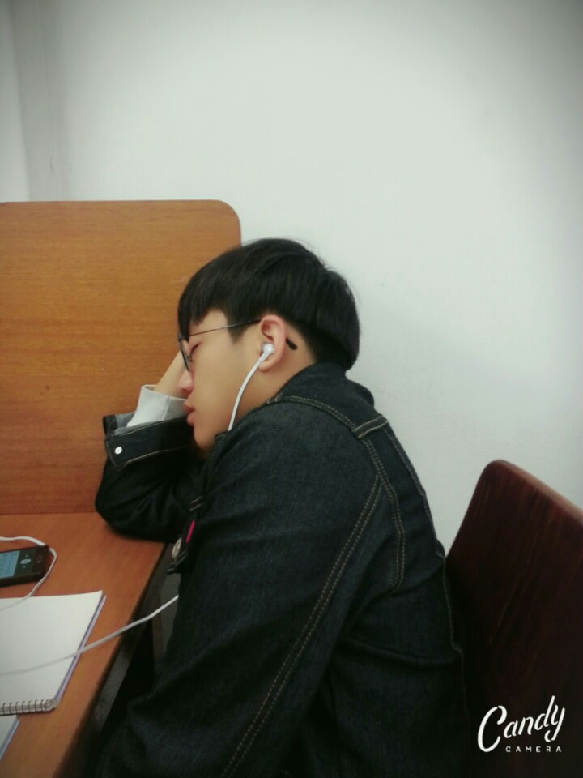

<!doctype html>
<html></html>
<head>
   <title>양지현 소개서</title> 
   <meta charset ="utf-8">
</head>

<body>
    <h1><a href="1숙제.html">양지현</h1></a>
    <ol>
        <li><strong><a href="2숙제.html" target="_blank">대학생때</strong></li></a>
        <li><strong><a href="3숙제.html">군대</strong></li></a>
        <li><strong><a href="4숙제.html">현재</strong></li></a>
    </ol>
</body>



<h3>대학생때</h3>
<p>
양지현의 대학은 <a href=" http://www.kmu.ac.kr/" title="대구에 있는 대학교">계명대학교</a>이다.<br>
그는 일본어 문학과에 재학을 하고 2020년도에 졸업을 하였다.<br>
</p>
<p>
    워킹홀리데이와 교환학생을 일본으로 다녀온것이 그의 일본어 실력 향상에 크게 영향을 주었다라고 판단된다.
</p>